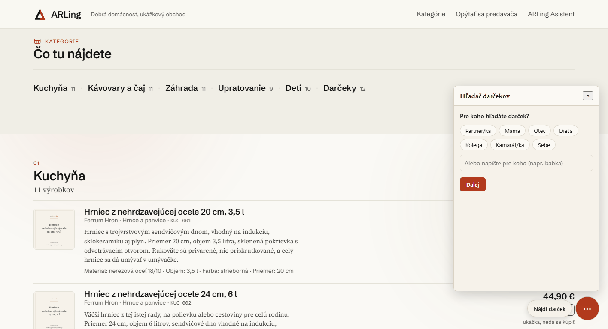

In November andDecember someonearrives at your e-shopnot knowing whatto buy, and leaveswithout an order.
Gift Finder is a mode of ARLing Asistent: instead of a chat, it asks three short questions (who for, budget, what they like) and picks five real products from your own feed, each with one sentence explaining why it fits. Same engine as Asistent, same price, nothing new to manage.
- 3 questions instead of a chat
- 5 products with a reason
- part of Asistent, no new price
- same quota as chat

01
How it works
Three steps, no new form on the shop's side, no new data.
-
The customer clicks "Find a gift".
A button appears next to the regular chat bubble. The shopper answers three short questions, by button or free text: who for (partner, mother, father, child, colleague, friend, myself), budget (up to 20, 50, 100, or over 100 EUR, ranges computed from your feed's own prices), and what they like (free text or up to six chips drawn from your feed's categories).
-
The finder searches your feed.
It composes a query from the answers, pulls candidates from your catalogue in Vectorize, and filters out anything outside the budget or unavailable, in code. If too few products remain after filtering, the budget is widened once by 30% and topped up.
-
It shows five picks with a reason.
Each product gets an image, price, link, and one sentence under 15 words explaining why it fits, written by the model strictly from data in the feed. Below the results, "Show more" (a second set from the same candidates, no new model call) and "Ask something else" (switches back to the regular chat).
02
What it looks like
A real run of the finder on the "Dobrá domácnosť" demo shop, which has its own Gifts category. Try it yourself with the button above.

03
Pricing
Gift Finder has no pricing plan of its own. It is a mode of ARLing Asistent and is counted exactly like a regular chat conversation: one finder session (three questions and a result) counts as one conversation, with the same monthly quota and the same session de-duplication.
| Plan | Price | Conversations / month | |
|---|---|---|---|
| Free | 0 € | up to 100 | Start for free |
| Starter | 19 € / month | up to 1,000 | Start for free |
| Pro | 39 € / month | up to 3,000 | Start for free |
No new Stripe product, no new database. Anyone already paying for Asistent (or on the free plan) gets the gift finder for free by adding one attribute to the script tag.
04
How to turn it on
If ARLing Asistent is already installed, it takes one attribute on the existing script tag. Without it, nothing changes on your store.
<script src="https://arling-asistent.arling.workers.dev/widget.js"
data-tenant="ACCOUNT_ID"
data-lang="auto"
data-gift="1"
defer></script>The WooCommerce plugin (submitted to wordpress.org, awaiting review) will get one checkbox for the gift finder in its settings screen. Until it is approved, the plugin installs the same way it does today, from a zip file on GitHub. A Shoptet and Upgates guide (HTML code editor) is at arling.sk/asistent/shoptet/.
05
What it knows, and what it does not
Built to promise only what it can actually do.
Picks from your feed only. It never recommends anything that is not in your product feed and never invents anything, exactly like Asistent's regular chat.
Does not know your stock beyond the feed. Availability is whatever your feed says. If the feed is stale, real stock may differ.
Does not wrap presents. It does not handle gift wrapping, gift cards, or shipping to a different address; that stays with your e-shop's checkout.
Does not store the customer's answers. Who for, budget, and interests are never stored, not by us, not in any database, exactly like the content of a regular conversation.
Counts against the same quota. One finder session is one conversation, with the same session de-duplication in KV as the chat.
06
FAQ
Is the gift finder a new product with its own price?
No. It is a mode of the existing ARLing Asistent, counted against the same monthly conversation quota, with no new pricing plan. Free up to 100 conversations a month, then 19 EUR up to 1,000 or 39 EUR up to 3,000 a month, exactly like the regular chat.
How long does it take to turn on?
If Asistent is already installed, add the attribute data-gift="1" to the existing <script> tag and save the page; a Find a gift button appears next to the chat bubble. Without that attribute, nothing changes.
Where do the picks come from?
Only from the same product feed your Asistent already uses. It never invents a product and never recommends anything that is not in your feed.
Do you store what the customer answered (who for, budget, interests)?
No. The answers are never stored, not by us, not in any database, exactly like the content of a regular Asistent conversation. We only keep daily counters for the monthly limit and billing.
What if not enough products fit the budget?
The budget is widened once by 30% and the finder fills in more candidates. If there is still too little to offer, the finder says so honestly and offers to switch to the regular chat with Asistent.
Does one gift-finder session count as one conversation?
Yes. One gift-finder session (three questions and the result) counts as one conversation, the same as the chat, with the same session de-duplication against the monthly quota.
Does this work on Shoptet, WooCommerce or Shopify?
Anywhere Asistent runs. On Shoptet and Upgates you add the attribute to the script tag in the HTML code. The WooCommerce plugin (submitted to wordpress.org, awaiting review) will get one checkbox in its settings; until approved, the plugin installs from a zip file on GitHub.
Want to know when the gift finder gets a WooCommerce toggle or a Shopify app?
Thanks, we'll be in touch.
Something went wrong, please try again or write to andrej@arling.sk.
Add data-gift="1" to your script tag, or try the demo first. Free up to 100 conversations a month.